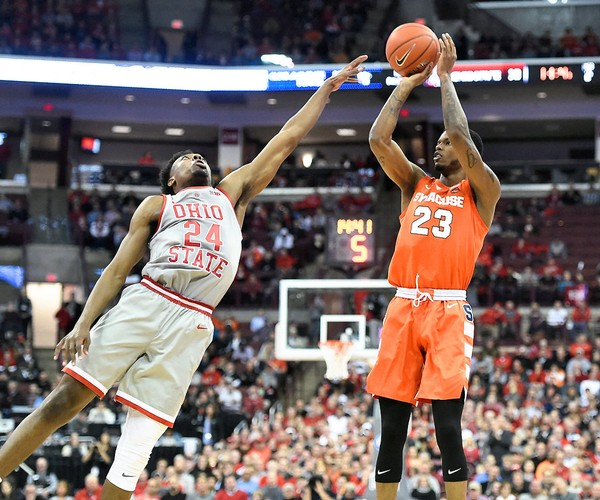

– Pedeapsa cu defecțiuni – Fiecare echipă poate comite absențe 4 în funcție de perioadă (fiind lipsă personală). Începând cu 5, toate greșelile personale făcute în acea perioadă dau dreptul echipei libere la aruncare liberă.
– Acumularea de faulturi – Un jucător nu poate acumula faulturi 5 în timpul jocului. Dacă da, el a ieșit din joc.
– Fouls (locul) – De fiecare dată când se face în zona restrictivă, faultul dă dreptul la o aruncare liberă. Dacă este oprit, echipa va relua mingea în joc pe linia laterală în locul cel mai apropiat de locul unde a fost făcut greșeala (aceasta dacă echipa nu a acumulat deja faulturi în acea perioadă).

– Etape și Dribble – După ce a primit mingea, jucătorul poate face două suporți. Dacă o primiți cu un picior în urmă, puteți să vă rotiți în jurul acelui picior fără a număra un suport. După driblingul și ținând mingea, el nu mai poate dribla din nou.
– Regula 3 secunde – Un jucător nu poate rămâne mai mult de 3 secunde în zona restrictivă a adversarului atunci când echipa deține mingea.
– Regula 5 secunde – Jucătorul aflat în posesia mingii nu poate să-l păstreze timp de mai mult de 5 secunde în mâini, fiind capabil să se învârtă la nesfârșit cu el.
– Regula 8 secunde – Echipa cu o minge de minge are 8 secunde pentru a obține mingea la jumătatea adversă. După aceasta, nu puteți să vă dribbiți înapoi până la jumătatea dvs. sau să faceți o trecere acolo.
– Regula 24 secunde – Echipa care are posesia mingii are 24 secunde pentru a face o aruncare si mingea atinge cel putin marginea coșului.